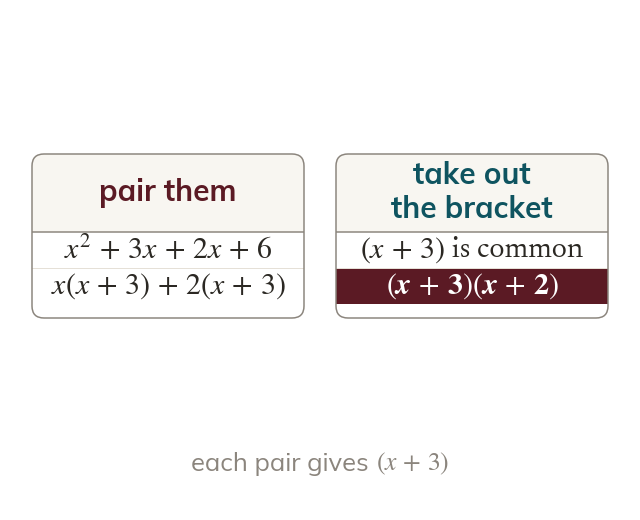
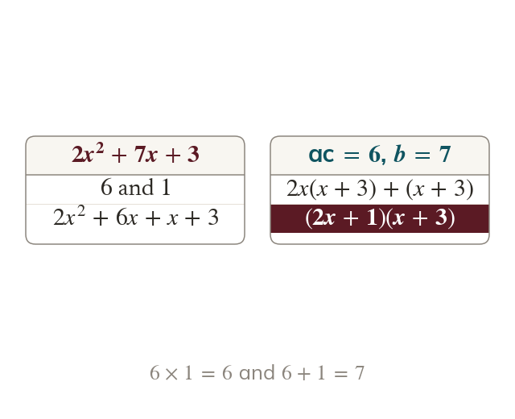
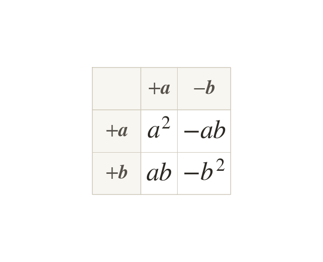
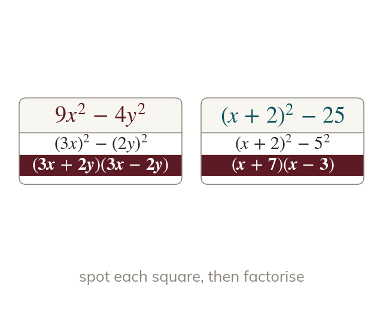

Grouping
Four terms factorise in pairs that share one bracket. So
Every factorising question in this chapter is the same move in a different disguise - find what the terms share and take it out - and spotting a difference of two squares, or grouping four terms into two pairs that share a bracket, is what turns a page of algebra into one line.
Work down the page at your own pace. Write every answer in your book first, then click to check it.
Read each card, then follow the worked examples one step at a time.

Four terms factorise in pairs that share one bracket. So

Splitting the middle term needs two numbers with product ac and sum b. Grouping then finishes it.
Pick an answer. If it's wrong, the feedback tells you which mistake it was.
Section Factorising : grouping four-term expressions, and quadratics with unit and non-unit leading coefficients.
Read each card, then follow the worked examples one step at a time.

A difference of two squares, is A sum of two squares does not factorise.

Each square can be a term or a whole bracket. So
Pick an answer. If it's wrong, the feedback tells you which mistake it was.
Section Factorising : the difference of two squares, including two-variable and bracketed cases.
Finished? Next lesson: 2.2 Rearranging Formulae.
Log in, then search for a code to practise that skill.